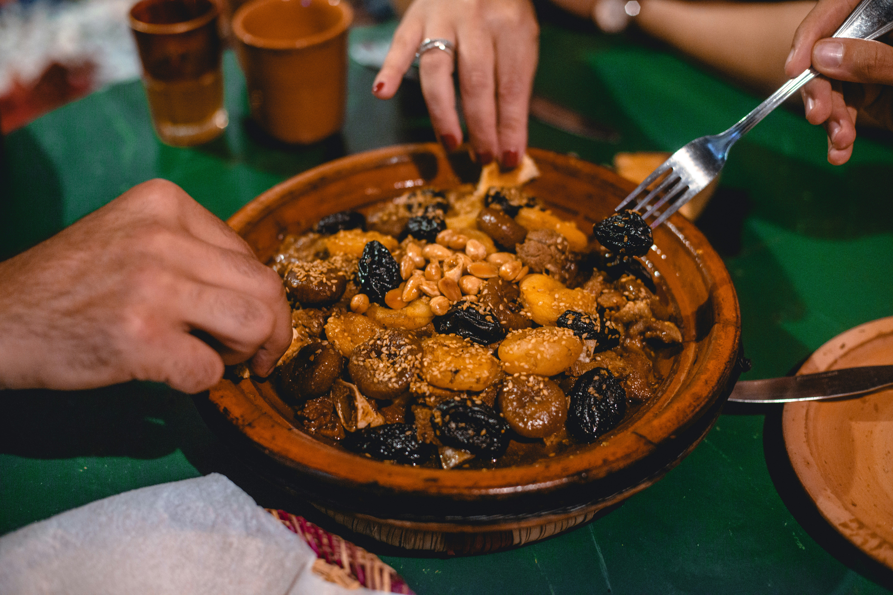

North Africa
Chicken Tagine
A tagine is both a dish and the pot it is cooked in: a shallow clay base with a tall cone-shaped lid. The cone traps steam, which rolls back down into the food, so meat becomes tender with very little water. This clever design suits the dry landscapes of North Africa, where the Amazigh (Berber) people have cooked this way for centuries.
Moroccan cooking blends Amazigh, Arab, Andalusian and French influences, and you can taste it in the spice mix: saffron, ginger, cumin, turmeric and cinnamon. Chicken with preserved lemon and olives is one of the country's most loved tagines, usually shared from one pot and eaten with bread.
Ingredients
- 8 chicken thighs or drumsticks
- 2 onions, finely sliced
- 3 garlic cloves, crushed
- 1 tbsp grated fresh ginger
- 1 tsp ground cumin
- 1 tsp ground turmeric
- 1 tsp paprika
- 1 cinnamon stick
- 1 pinch of saffron threads
- 3 tbsp olive oil
- 1 preserved lemon, cut into strips
- 1 cup green olives
- 1 cup chicken stock
- 1 small bunch fresh coriander, chopped
- 1 tsp salt (or to taste)
Instructions
Step 1: Marinate the chicken
- Mix the garlic, ginger, cumin, turmeric, paprika, salt and 2 tbsp of the oil into a paste.
- Rub it all over the chicken and leave for at least 30 minutes (or overnight in the fridge).
Step 2: Brown and build the base
- Heat the rest of the oil in a tagine or heavy pot. Brown the chicken on both sides, then set aside.
- Add the onions and cook slowly for 10 minutes until soft and golden.
Step 3: Slow-cook
- Soak the saffron in the warm stock for 5 minutes.
- Return the chicken to the pot, add the cinnamon stick and pour in the saffron stock.
- Cover and simmer on low heat for 45 minutes, until the chicken is very tender.
Step 4: Finish and serve
- Add the preserved lemon and olives and cook uncovered for 10 more minutes so the sauce thickens.
- Scatter with coriander and serve straight from the pot with bread or couscous.
Watch how it's made
Nutrition facts
| Nutrient | Amount |
|---|---|
| Calories | about 420 kcal |
| Carbohydrates | about 12 g |
| Protein | about 32 g |
| Fat | about 26 g |
| Fiber | about 3 g |
Where it comes from
Tagines are cooked across North Africa, but this lemon-and-olive version is a classic of Morocco.